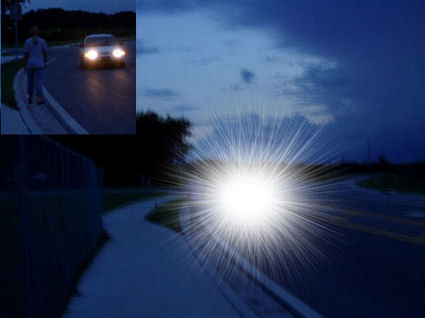
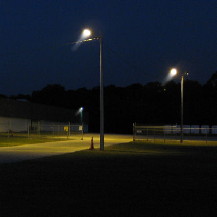
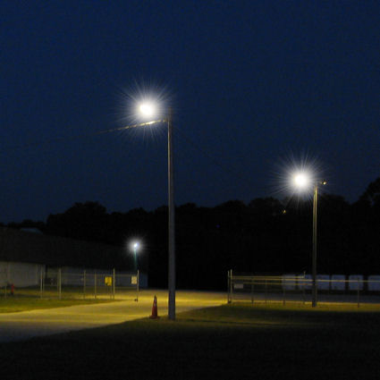
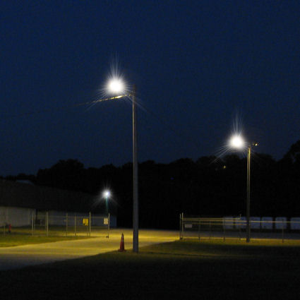
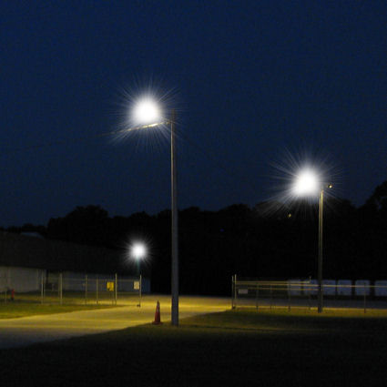

Аберрации высшего порядка (HOA)
"Когда в конце 1980-х я начал заниматься исследованиями волнового фронта, я понял, что рефракционная хирургия увеличивает аберрации глаза и приводит к потере остроты зрения, которая лучше всего поддается коррекции... Раньше мы не обращали особого внимания на аберрации более высокого порядка, потому что не могли их устранить".- Рэймонд Эпплгейт, доктор медицинских наук. Источник: EuroTimes, июнь 2003
Есть ли у вас отклонения более высокого порядка после операции LASIK, которые негативно влияют на качество вашей жизни? Если да, то FDA хочет получить ваше мнение. Отправьте отчет о медицинском наблюдении с Управлением по санитарному надзору за качеством пищевых продуктов и медикаментов в режиме онлайн. Кроме того, вы можете позвонить в Управление по санитарному надзору за качеством пищевых продуктов и медикаментов по телефону 1-800-FDA-1088, чтобы сообщить об этом по телефону. бумажный бланк и либо отправьте его по факсу на номер 1-800-FDA-0178, либо отправьте по почте на адрес, указанный внизу страницы 3, либо загрузите Мобильное приложение MedWatcher для сообщения о проблемах с LASIK в FDA с помощью смартфона или планшета. Ознакомьтесь с образцом Отчеты о травмах, полученных с помощью LASIK в настоящее время находится на рассмотрении в FDA.
Пациенты с осложнениями LASIK приглашаются на присоединяйтесь к обсуждению на FaceBook
На изображении слева внизу показана серьезная форма сферической аберрации после операции LASIK (обратите внимание, что пешеход полностью закрыт вспышкой). Справа внизу приведено изображение, имитирующее глазную карту, созданную на основе топографии роговицы пациента с аберрациями более высокого порядка.

/ectasia-visual-simulation-NF(425).jpg)
"Визуальные отклонения "или "; оптические аберрации " опишите все несовершенства оптической системы глаза, которые приводят к неправильной фокусировке световых лучей.
Аберрации более низкого порядка это простые нарушения фокусировки, такие как миопия (близорукость), гиперметропия (дальнозоркость) и астигматизм, которые можно исправить с помощью очков. Аберрации высшего порядка (НОА) - это более сложные дефекты оптической системы глаза. Аберрации более высокого порядка не поддаются коррекции с помощью очков. Неправильный астигматизм роговицы приводит к аберрациям более высокого порядка.
Аберрации более высокого порядка (HOA) - это более сложные формы расфокусировки. HOA присутствуют во всех глазах человека, но в нормальных, неоперированных глазах они настолько незначительны, что едва заметны, если вообще заметны. При вырезании лоскута LASIK и удалении ткани роговицы создается неестественная, неправильная форма роговицы, которая увеличивает аберрации глаза более высокого порядка. Симптомы HOA включают звездообразование, ореолы, двоение в глазах, множественные изображения и нечеткость зрения. Тяжесть индуцированных HOAs зависит от профиля лоскута LASIK, профиля абляции и размера зрачков пациента. Вы можете прочитать больше о размере зрачков и качестве зрения после LASIK здесь .
Если у вас возникли проблемы со зрением после операции LASIK, вашим первым шагом должно стать приобретение новых очков, чтобы посмотреть, улучшат ли они ваше зрение. Часто у пациентов наблюдается "остаточная аномалия рефракции", даже при использовании новейшей технологии LASIK (вот вам и сверхчеловеческое зрение с волновым фронтом). Если ваши проблемы со зрением не корректируются с помощью очков, у вас, скорее всего, аберрации более высокого порядка. Только жесткие контактные линзы способны корректировать аберрации более высокого порядка.
Аберрации более высокого порядка измеряются с помощью аберрометр волнового фронта и выражается в терминах, описывающих форму и интенсивность отклонения световых лучей, когда они проходят через оптическую систему глаза на пути к сетчатке. Кома, сферическая аберрация и трилистник - наиболее распространенные аберрации, вызванные LASIK. Кома приводит к размытию света, напоминающему хвост кометы на ночном небе (см. иллюстрацию ниже, вверху слева). Двоение в глазах - распространенный симптом комы. Сферические аберрации возникает, когда зрачок расширяется больше, чем площадь роговицы, которая была полностью скорректирована с помощью лазерного лечения, как правило, при тусклом освещении. Сферическая аберрация связана с гало, вспышками звезд, призрачными изображениями и потерей контрастной чувствительности (невозможностью разглядеть мелкие детали) при слабом освещении (см. иллюстрацию сферических аберраций ниже, вверху справа). Трилистник вызывает размытие световой точки в трех направлениях, как у символа Mercedes-Benz (см. иллюстрацию ниже, внизу слева). У пациентов, перенесших операцию LASIK, часто наблюдаются все эти отклонения (и другие), что приводит к искажению изображения. ночное видение когда зрачок широко раскрывается и позволяет свету проникать через большую площадь неровной поверхности роговицы (см. иллюстрацию ниже, справа внизу).




Изготовленный на заказ LASIK , также известный как LASIK с наведением по волновому фронту , был представлен индустрией LASIK в Соединенных Штатах в 2003 году. В отличие от традиционной LASIK, которая основана исключительно на рефракции (измерении близорукости, дальнозоркости и астигматизма), "индивидуальная" или "управляемая волновым фронтом" LASIK основана на суммарных аберрациях глаза (низшего и высшего порядка). Перед операцией составляется карта волнового фронта, которая используется для программирования индивидуального лечения для каждого отдельного глаза. Хотя целью wavefront-LASIK является коррекция "небольших оптических дефектов" (HOA),, эта процедура на самом деле делает их еще хуже, чем до операции . Увеличение HOAs при использовании обычной LASIK больше, чем при использовании специальной LASIK с наведением по волновому фронту. На самом деле это практически никак не связано со способностью custom-LASIK лечить предоперационные отклонения - это связано с удалением большего количества тканей на периферии роговицы, чтобы компенсировать потерю лазерной энергии на склоне роговицы (эффект косинуса). LASIK, оптимизированный для волнового фронта предпринимаются попытки сохранить первоначальную форму кривизны роговицы за счет применения большего количества лазерной энергии на периферии, но, как и другие формы LASIK, это неизменно приводит к увеличению аберраций более высокого порядка. Подробнее: Ссылка
С веб-сайта FDA: "Несмотря на то, что лечение с использованием волнового фронта направлено на устранение аберраций более высокого порядка, результаты клинических исследований показали, что средние аберрации все еще увеличиваются, но в меньшей степени, чем после обычной процедуры LASIK".; Источник
ПРИМИТЕ ВЫЗОВ ВОЛНОВОГО ФРОНТА! Если после прочтения этого веб-сайта вы решите пройти процедуру LASIK, примите участие в конкурсе wavefront challenge. Получите копию вашей предоперационной карты волнового фронта. (Если вы объясните хирургу, зачем вам нужна эта карта, он, возможно, не захочет продолжать операцию). После операции попросите сделать карту послеоперационного волнового фронта, полученную при том же диаметре сканирования, что и до операции. Сравните аберрации более высокого порядка до и после операции. (Это измерение не имеет смысла, если диаметры сканирования не совпадают). Увеличились ли аберрации более высокого порядка? Предупреждал ли вас ваш хирург, что индивидуальное лечение с помощью LASIK приведет к увеличению визуальных искажений? Теперь вы нам верите?
Была ли эта информация полезной? Воспользуйтесь формой обратной связи в строке меню выше, чтобы отправить нам сообщение.
Медицинские исследования об аберрациях высшего порядка после LASIK
Аберрации более высокого порядка после операции LASIK по поводу близорукости с использованием лазеров alcon и wavelight: проспективное рандомизированное исследование .
Рефракционная хирургия, ноябрь-декабрь 2005 г.;21(6):799-803.
Бринт, Ю.Ф.
Бринт Вижн, Метейри, Лос-Анджелес, США. Brintmd@aol.com
ЦЕЛЬ: Оценить различия в результатах лечения аберраций более высокого порядка при двустороннем лечении методом LASIK с наведением волнового фронта и с оптимизацией волнового фронта у двух близко подобранных групп пациентов через 1 и 3 месяца после операции.
МЕТОДЫ: В исследование были включены тридцать пациентов, которым случайным образом была назначена двусторонняя процедура LASIK с использованием лазерной системы Alcon CustomCornea или волновой лазерной системы WaveLight Allegretto. Были оценены стандартные клинические показатели, такие как острота зрения и выраженная рефракция, а также показатели качества зрения, такие как субъективные опросники и аберрации более высокого порядка. Все пациенты проходили последующее обследование в течение 3 месяцев после операции.
РЕЗУЛЬТАТЫ: Через 1 и 3 месяца после операции показатели остроты зрения и рефракции без коррекции были одинаковыми для двух лазерных платформ: от 90% до 93% глаз находились в пределах ±0,5 D от ожидаемого результата. Через 1 и 3 месяца в группе Alcon CustomCornea наблюдалось статистически значимое снижение общего количества индуцированных аберраций высшего порядка по сравнению с группой Allegretto Wave (P < 0,05).
ВЫВОДЫ: Метод LASIK при миопии с использованием волновых систем Alcon CustomCornea и WaveLight Allegretto Wave очень эффективен с точки зрения улучшения рефракции и некорригированной остроты зрения. Однако аберрации были статистически значимо больше после лечения с помощью волновой системы WaveLight Allegretto, чем с помощью Alcon CustomCornea.
Лазерная коррекция с использованием волнового фронта с системой Zyoptix 3.1 для коррекции близорукости и сложного миопического астигматизма при наблюдении в течение 1 года: клинические результаты и изменение аберраций более высокого порядка.
Офтальмология. Декабрь 2004 г.;111(12):2175-85. Конен Т., Берен Дж., Кейн С., Миршахи А.
Отделение офтальмологии Университета Иоганна Вольфганга Гете, Франкфурт-на-Майне, Германия. kohnen@em.uni-frankfurt.de
ЦЕЛЬ: Оценить безопасность, эффективность, предсказуемость, стабильность и изменение аберраций после лечения миопии и миопического астигматизма методом лазерной коррекции с использованием волнового фронта.
ДИЗАЙН: Проспективное, нерандомизированное, самоконтролируемое исследование. УЧАСТНИКИ: Исследование LASIK с использованием волнового фронта было проведено на 97 глазах в течение 1 года. У обработанных глаз средний субъективный сферический эквивалент (SE) составил -5,22±/-2,07 диоптрий (D), что свидетельствует о миопии в диапазоне от -0,25 до -9,00 D и астигматизме в диапазоне от 0 до -3,25 D.
ВМЕШАТЕЛЬСТВО: После разреза микрокератомом была выполнена эксимерная абляция на основе волнового фронта (Zyoptix 3.1). Во всех процедурах использовалась полная процедура для достижения эмметропии по номограмме, предоставленной производителем системы.
ОСНОВНЫЕ ПОКАЗАТЕЛИ: безопасность, эффективность, предсказуемость и стабильность были оценены через 1, 3 и 12 месяцев после операции. Изменения волнового фронта аберраций высшего порядка (НОА) через 1 год были определены для размеров зрачков 3,5 и 6 мм. РЕЗУЛЬТАТЫ: Через 1 год после операции острота зрения без коррекции составила 20/20 или выше в 83% глаз и 20/40 или выше в 98%. Среднее субъективное проявление СЭ через 1 год составило -0,25±/-0,43 сут; у 77% оно было в пределах 0,50 Сут и у 95% - в пределах 1,0 сут. Ни один глаз не потерял > или =2 линии наилучшей коррекции зрения с помощью очков (BSCVA) через 1 год после операции; 40 глаз получили 1 линию коррекции зрения с помощью очков, а 5 глаз - 2 линии. Общий среднеквадратичный показатель HOA (RMS) увеличился в среднем в 1,23 раза+/-0,57 раза при зрачке 3,5 мм; для зрачка 6 мм коэффициент увеличения составил 1,52+/-0,36. Никаких изменений или уменьшения общего среднеквадратичного значения HOA не наблюдалось в 45,5% глаз со зрачком 3,5 мм и в 20,6% со зрачком 6 мм. Наблюдалось значительное увеличение первичной сферической аберрации (Z 4,0) в 4,11раза+/-10,17 раза для зрачков диаметром 3,5 мм и в 4,31 раза+/-6,76 раза для зрачков диаметром 6 мм.
ВЫВОДЫ: Лазерная коррекция зрения с использованием волнового фронта с использованием Zyoptix 3.1 является эффективной и безопасной процедурой для лечения близорукости и миопического астигматизма. Несмотря на то, что почти в половине случаев HOAs удалось уменьшить, все еще существовала недостаточная коррекция и индукция HOAs с помощью используемого алгоритма.
Рефракционная хирургия, оптические аберрации и улучшение зрения.
Рефракционная хирургия, 1997, май-июнь; 13(3):295-9. Эпплгейт, РА, Хоуленд, Х.К.
Отделение офтальмологии медицинского факультета Медицинского научного центра здоровья Техасского университета в Сан-Антонио, США.
Оптика зрения приобретает новое клиническое значение. Учитывая, что современные рефракционные процедуры могут вызывать и вызывают значительное количество глазных аберраций более высокого порядка, которые часто влияют на повседневную зрительную функцию и качество жизни пациента, мы больше не можем относить рассмотрение глазных аберраций к академическим дискуссиям. Вместо этого нам нужно двигаться в направлении минимизации (а не увеличения) аберраций глаза, одновременно исправляя сферическую и цилиндрическую аномалии рефракции глаза. В рефракционной хирургии наступили захватывающие времена, которые должны быть смягчены тем фактом, что после того, как все исследовательские, клинические и маркетинговые проблемы улягутся, уровень, до которого мы улучшим качество изображения на сетчатке, будет определяться компромиссом между стоимостью и улучшением качества жизни. предложения рефракционной хирургии.
Сравнение аберраций волнового фронта роговицы после фоторефракционной кератэктомии и лазерного кератомилеза in situ.
Американский журнал офтальмологии, том 127, выпуск 1, январь 1999 г., Страницы 1-7
Ошика Т., Клайс С.Д., Эпплгейт Р.А., Хоуленд Х.К., Эль Данасури М.А., отделение офтальмологии медицинской школы Токийского университета, Япония. oshika-tky@umin.ac.jp
ЦЕЛЬ: Сравнить изменения аберраций волнового фронта роговицы после фоторефракционной кератэктомии и лазерного кератомилеза in situ.
МЕТОДЫ: В проспективном рандомизированном исследовании 22 пациентам с двусторонней миопией была выполнена фоторефракционная кератэктомия на одном глазу и лазерный кератомилез in situ на другом глазу. Процедура, назначенная для каждого глаза, и последовательность хирургических вмешательств для каждого пациента были выбраны случайным образом. Измерения топографии роговицы проводились до операции, через 2 и 6 недель, 3, 6 и 12 месяцев после операции. Полученные данные были использованы для расчета аберраций волнового фронта роговицы как для маленьких (3 мм), так и для больших (7 мм) зрачков.
РЕЗУЛЬТАТЫ: Как фоторефракционная кератэктомия, так и лазерный кератомилез in situ значительно увеличили общие аберрации волнового фронта для зрачков диаметром 3 и 7 мм, и показатели не вернулись к предоперационному уровню в течение 12 месяцев наблюдения. Для зрачка диаметром 3 мм не было выявлено статистически значимой разницы между фоторефракционной кератэктомией и лазерным кератомилезом in situ ни в одном послеоперационном периоде. При 7-миллиметровом зрачке глаза после лазерного кератомилеза in situ демонстрировали значительно большие суммарные аберрации, чем глаза после фоторефракционной кератэктомии, где наблюдались значительные межгрупповые различия в отношении сферообразной аберрации, но не в отношении коматозной аберрации. Это несоответствие, по-видимому, связано с уменьшением переходной зоны лазерной абляции при лазерном кератомилезе in situ. Перед операцией имитация расширения зрачков с 3 до 7 мм привела к увеличению общей аберрации в пять-шесть раз. После операции такое же расширение привело к увеличению в 25-32 раза показателей в группе фоторефракционной кератэктомии и в 28-46 раз - в группе лазерного кератомилеза in situ. Для зрачка диаметром 3 мм доля коматозных аберраций увеличилась как после фоторефракционной кератэктомии, так и после лазерного кератомилеза in situ. При 7-миллиметровом зрачке аберрация, похожая на кому, была доминирующей до операции, но сферообразная аберрация стала доминирующей после операции.
ВЫВОДЫ: как фоторефракционная кератэктомия, так и лазерный кератомилез in situ увеличивают аберрации волнового фронта роговицы и изменяют относительный вклад коматозных и сферообразных аберраций. При большом зрачке лазерный кератомилез in situ вызывает больше сферических аберраций, чем фоторефракционная кератэктомия. Это открытие может быть связано с меньшей переходной зоной лазерной абляции при процедуре лазерного кератомилеза in situ.
Отказ от ответственности: Информация, содержащаяся на этом веб-сайте, представлена с целью предупреждения людей об осложнениях процедуры LASIK перед операцией. Пациентам, у которых возникли проблемы с процедурой LASIK, следует обратиться за консультацией к врачу.